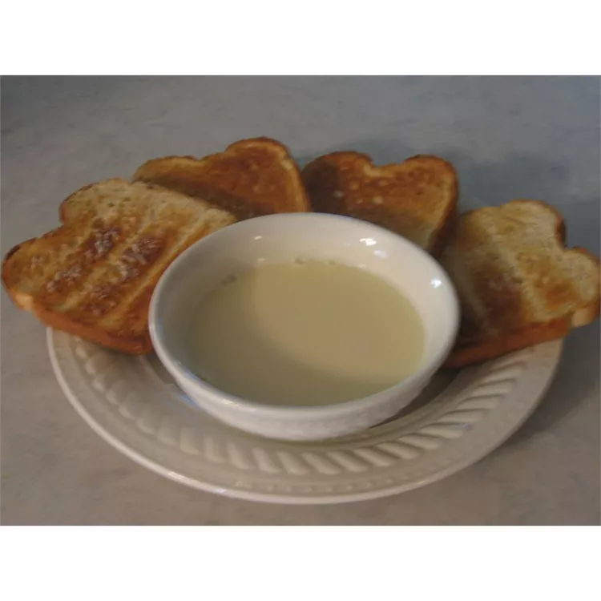

Pap

Description
Warm treat, to eat with a spoon or as a dip for buttered toast.
Ingredients
- 1/4 cup cornstarch
- 1/3 cup sugar
- 2 cups milk
- 2 eggs, lightly beaten
- 2 tablespoons butter
- 1 teaspoon vanilla extract
Steps
- Combine cornstarch and sugar in a medium microwave safe bowl. Gradually whisk in milk.
- Microwave on High until thickened and boiling, about 5 to 7 minutes, stirring every 2 minutes. Gradually beat half the hot cornstarch mixture into the eggs, then stir eggs back into remaining cornstarch mixture.
- Microwave on High until thickened and heated through, about 1 to 3 minutes, stirring every 45 seconds. Whisk in butter and vanilla. Serve warm.